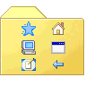
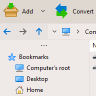
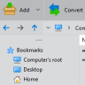
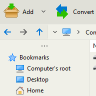

Ten Ten
Default theme. Meant to give the application's file manager / archive
manager GUI a
Windows 10 -like
look&feel.
|
 Experience Experience
Give the application GUI a look&feel similar to Windows XP file
explorer.
|
Classic
Bring to PeaZip's file manager / archive manager a look&feel
inspired to
classic Windows 9x and 2000.
|
Mocha
Warm colors theme, same icons of Ten.
Intermediate darkness color scheme meant for integrating with light and
dark UIs.
|
|
|
FireCrystal
Integrate the application to an enviroment with icons similar in look
and feel to Crystal, Crystal Clear, and Tango Icons themes. Recommended
to blend with file managers and file archivers commonly found on most
Linux systems.
|
Seven
Meant to integrate the application file manager / archive manager in
environments
with Windows 7 -like look & feel and icons.
|
Graphite
Neutral, medium gray theme, same icons of Ten.
Meant to integrate the application in dark, medium dark, and light
system themes, until a full featured dark mode is available.
|
Senape
Soft yellows color palette, same icons of Ten.
Intermediate darkness color scheme meant for integrating with light and
dark UIs.
|
|
PeaZip file archiver themes add-ons
customizes main program's archive manager /
file manager GUI, colours,
and icons. Themes can be
applied from Option > Theme selecting "Custom" in the Theme dropdown
menu and selecting a custom theme package i.e. xyz.theme.7z.
PeaZip 7+ version accepts as icon sources arbitrarily sized graphic
saved as 32 bit or 8 bit PNG with transparency.
Icons will be scaled at runtime to be rendered fitting system's icon
size (or approximate size that can be efficiently rendered), up to 10x
zoom - in example a small icon can be rendered ranging from 16px to
160px.
Themes currently embebbed in PeaZip application packages contains
graphic is saved as 32 bit PNG with transparence.
Folders 16 and 32 contains x3 zoomed icons (48 and 96 px)
Folders 48 and 96 contains non zoomed 48 and 96 px icons

|
Widgetset objects
rendered by the system are not affected by PeaZip's theme colors, as
PeaZip does not attempt to bypass native drawing methods, for
stability, security and performances reasons.
This limitation apply to all platforms, and the system-rendered objects
varies in different platforms.
|
|
Windows 10
Dark Mode colors are not passed from system to application: querying a
W10 system for UI colors currently get light mode colors in response
even when dark mode is active. This implementation of dark theming is
unique to Windows 10.
As workaround it is possible to set an High
Contrast theme, which passes colors consistent with Dark Mode
UI, until a complete API is made available to developers, or W10 is
fixed in order to correctly pass real UI colors values to applications
when queried (as every other operating system does).
|
PeaZip Theme
packages can be created (or saved for back-up) using
PeaZip, from
Options >
Theme > Create Theme from current settings, a theme package
xyz.theme.7z will be created
on the desktop; it is a standard 7z archive.
Please note that system
icons (i.e. on system's
context menu, and for associated
file types) are not affected by themes. On Microsoft Windows systems,
system's icons are
stored in \PeaZip\res\icons\ path and
can be edited with a suitable editor or replaced with custom icon
files; on Linux system's icons (in PNG format) are stored accordingly
the distribution and the desktop environment policies, i.e.
\opt\kde3\share\icons\ or \usr\share\icons\
Customizing PeaZip themes
To further customize themes, or to remove unwanted themes, “Manage
Themes” opens the path containing themes, that is located in user’s
application
data for installable versions or inside PeaZip’s folder for portable
versions.
Theme’s graphic can be edited with any graphic files editor capable of
working with 32 bit PNG with transparence, and
theme.txt can be edited as UTF-8 text.
Distributing PeaZip themes
Themes add-ons can be freely distributed as independent
packages, as long copyright/copyleft licenses for the graphic elements
used in the theme is respected.
If you are interested in contributing a theme for being distributed
with PeaZip please contact
me at the mail address on Online support
page.
The file note.readme (plain text) is inherited from the original theme,
please edit it with relevant information and credits about the new
theme if you plan to publicly release it.
Custom, user-provided icons, themes, graphic and other resources
can be found on PeaZip's Resources
folder on
SourceForge.
|
|
|
|
|

|
PeaZip
is a free cross-platform file manager / archive manager software for Linux
and
Windows systems, provides unified
portable GUI for Open Source technologies as 7-Zip, FreeArc,
PAQ, UPX... free alternative to WinRar, WinZip and
similar archivers.
- Create 7Z, ARC, BZ2, GZ, *PAQ, PEA, QUAD/BALZ, TAR, UPX, WIM, XZ, ZIP
files
- Open and extract ACE, ARJ, CAB, DMG, ISO, LHA,
RAR, UDF, ZIPX files and more, over 200 archive types
supported
Features of PeaZip includes: file
manager, archive manager (opener and extractor), batch
creation and extraction of multiple
archives at once, convert files, create
self-extracting archives, split and join files,
strong encryption with two factor authentication, encrypted password
manager, secure deletion, find
duplicate files, calculate hash and checksum,
export job definition as script.
|

|
|
|
|
|